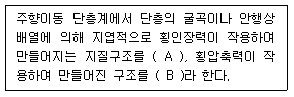
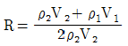
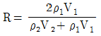
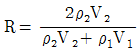
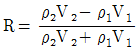
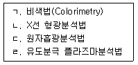
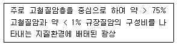

응용지질기사 (2016-05-08 기출문제)
1과목: 암석학 및 광물학
1. 다음 중 엽리구조가 관찰되지 않는 암석은?
- 점판암
- 규암
- 녹색편암
- 편마암
(정답률: 74%)

2. 화성암의 분류에서 SiO2의 함량을 기준으로 분류하는 명칭이 아닌 것은?
- 규장질암
- 중성암
- 심성암
- 고철질암
(정답률: 70%)
3. 다음 중 가장 고온의 환경에서 형성된 변성상은?
- 백립암상(granulite facies)
- 청색 편암상(blue schist facies)
- 녹색 편암상(green schist facies)
- 녹렴석-각섬석상(epidote-amphibolite facies)
(정답률: 68%)
4. 비쇄설성이고 증류잔류작용에 의해서 생성되는 화학적 퇴적암은?
- 석고(gypsum)
- 이암(mudstone)
- 응회암(stuff)
- 석회암(limestone)
(정답률: 67%)
5. 다음 중 열점(hot spot)에서 분출되는 용암의 성분은?
- 화강암질
- 안산암질
- 조면암질
- 현무암질
(정답률: 74%)
6. 저반과 저반 사이에 관입 당한 오래된 암석이 뾰족한 쐐기 모양으로 꽂혀 있는 부분을 무엇이라 하는가?
- 암맥(Dyke)
- 암경(Neck)
- 현수체(Roof pendant)
- 아스피테(Aspite)
(정답률: 67%)
7. 퇴적물에서 관찰할 수 있는 특성 중 퇴적물의 운반거리를 예상하게 할 수 있는 것은?
- 호상층리
- 원마도
- 구형도
- 사층리
(정답률: 75%)
8. 빙하호수에서 흔히 발견되는 지층에서 퇴적물의 종류가 계절에 따라서 변화되었음을 반영하는 퇴적물의 특징은?
- 점이층리
- 표석점토
- 구조토
- 호상점토
(정답률: 48%)
9. 화산쇄설물을 분류할 때, 모양이 불규칙하고 입자의 크기가 2mm에서 64mm까지인 것은?
- 화산회
- 화산탄
- 화산력
- 화산암괴
(정답률: 62%)
10. 다음 중 변성정도가 높은 광물부터 낮은 광물의 순서대로 올바르게 나열된 것은?
- 녹니석, 흑운모, 석류석, 백운모
- 녹니석, 백운모, 규선석, 석류석
- 석류석, 흑운모, 녹니석, 규선석
- 규선석, 석류석, 흑운모, 녹니석
(정답률: 65%)
11. 빛이 고밀도 물질에서 저밀도 물질로 입사할 때, 임계각 이상의 입사각을 가지고 입사한 광선이 나타내는 현상은?
- 복굴절 현상
- 단굴절 현상
- 난반사 현상
- 전반사 현상
(정답률: 60%)
12. 교대작용에 의해 생성된 가상(pseudomorph)에 해당하지 않는 것은?
- 남동석 → 공작석
- 황철석 → 침철석
- 단사황 → 사방황
- 방해석 → 석영
(정답률: 58%)
13. 광물의 온도 상승에 따른 흡열반응과 발열반응의 온도와 그 강도를 측정하는 분석법은 무엇인가?
- 시차열분석
- 열중량분석
- 시차주사열용량분석
- 적외선흡수분광분석
(정답률: 65%)
14. X선 회절을 공식화한 Bragg 방정식에서 파장과 회절각 등으로 알 수 있는 것은?
- 격자의 대칭
- 격자의 결합
- 격자면의 간격
- 결정의 형태
(정답률: 54%)
15. 그림과 같은 쌍정이 나타나는 광물이 아닌 것은? (문제 복원 오류로 그림이 없습니다. 정답은 1번 입니다. 정확한 그림 내용을 아시는분 께서는 오류신고 또는 게시판에 작성 부탁드립니다.)
- 석고
- 십자석
- 형석
- 정장석
(정답률: 46%)
16. 규산염 광물의 기본 구조 단위는 SiO4 사면체이며, SiO4 사면체들의 연결 방식에 따라서 여러 가지 구조가 형성된다. 규산염 광물의 구조에 의한 분류로 옳지 않은 것은?
- 독립사면체형 - 감람석
- 층상구조 - 녹주석
- 단쇄형 - 규회석
- 복쇄형 - 투각섬석
(정답률: 70%)
17. 지각을 구성하는 원소들 중에서 산소(O) 다음으로 무게 백분율(wt%)이 높은 것은?
- 철(Fe)
- 알루미늄(Al)
- 규소(Si)
- 마그네슘(Mg)
(정답률: 70%)
18. 현무암질 마그마가 냉각되면서 고온에서부터 저온으로 갈수록 정출되는 광물들의 순서를 Bowen 반응계열에 따라 순서대로 나타낸 것은?
- 각섬석 - 감람석 - 휘석 - 흑운모
- 감람석 - 휘석 - 각섬석 - 흑운모
- 휘석 - 감람석 - 각섬석 - 흑운모
- 휘석 - 각섬석 - 감람석 - 흑운모
(정답률: 78%)
19. 공유결합을 이루고 있는 전자쌍을 잡아당기는 상대적인 인력의 세기를 의미하는 것으로 원소 C, N, O, F, S 및 Cl은 이것이 높기 때문에 금속결합을 하기 보다는 흔히 공유결합을 이루게 되는 것은?
- 이온반경
- 이온화에너지
- 결정반경
- 전기음성도
(정답률: 69%)
20. 8면체상 배위다면체의 경우, 양이온 주위를 둘러싸고 있는 음이온의 수는?
- 4
- 6
- 8
- 12
(정답률: 58%)
2과목: 구조지질학
21. 침식윤회에서 노년기 이후 최종적으로 형성되는 평탄한 침식 면을 무엇이라 하는가?
- 구릉
- 단애
- 준평원
- 완평원
(정답률: 69%)
22. 대칭적으로 발달되어 있는 지구자기장 줄무늬가 생성되는 곳은?
- 섭입대
- 대양저 산맥
- 변환단층
- 충돌대
(정답률: 67%)
23. 다음 ( )안에 들어갈 용어로 옳은 것은?

- A : 양의 꽃구조(positive flower structure), B : 음의 꽃구조(negative flower structure)
- A : 음의 꽃구조(negative flower structure), B : 양의 꽃구조(positive flower structure)
- A : 윈도우(window), B : 클리페(klippe)
- A : 클리페(klippe), B : 윈도우(window)
(정답률: 64%)
24. 단층(fault)과 절리(joint)를 구분하는 가장 큰 기준이 되는 것은?
- 변위
- 두께
- 연장성
- 생성시기
(정답률: 55%)
25. 지각에 비해 맨틀에서 훨씬 풍부하게 존재하는 광물은?
- 석영
- 운모류
- 감람석
- 장석류
(정답률: 73%)
26. 우리나라의 지질계통명 중에서 중생대 백악기에 속하지 않는 것은?
- 유천층군
- 신동층군
- 연일층군
- 하양층군
(정답률: 61%)
27. 이전 지층과 새 지층 사이에 명확한 변형에 의한 구조적인 단절을 지시하는 부정합의 형태로서 가장 특징적인 것은?
- 비정합(disconformity)
- 난정합(nonconformity)
- 경사부정합(angular unconformity)
- 기저부정합(basal unconformity)
(정답률: 58%)
28. 시층서 단위와 지질시대 단위의 연결이 잘못된 것은?
- 누대층(Eonothem) - 누대(Eon)
- 대층(Erathem) - 세(Epoch)
- 계(System) - 기(Period)
- 조(Stage) - 절(Age)
(정답률: 72%)
29. 현재 일본에서의 현저한 지진활동의 원인은?
- 태평양판의 유라시아판 하부로 섭입
- 필리핀판의 태평양판 하부로 섭입
- 인도판과 유라시아판의 충돌
- 필리핀판과 유라시아판의 발산
(정답률: 83%)
30. 어떤 지역에서 지하 2km에 지하구조물을 설치하려고 한다. 암석의 평균 밀도가 3g/cm3때 구조물이 받는 수직응력은 얼마인가? (단, 중력가속도 g = 9.8m/sec2임)
- 58.8MPa
- 61.2MPa
- 588MPa
- 612MPa
(정답률: 70%)
31. 지구의 내부구조 중 연약권(asthenosphere)에 대한 설명으로 옳은 것은?
- 지각 바로 아래에 위치하며 모호면을 경계로 구분되어진다.
- 지각 및 맨틀의 최상부로 구성되어 있다.
- 지하 400km 이하에 위치하고 있다.
- 연약권의 위치는 저속도층(low-velocity zone)과 일치한다.
(정답률: 60%)
32. 화산 호상열도(volcanic island arc)가 아닌 것은?
- 일본
- 필리핀
- 하와이
- 인도네시아
(정답률: 62%)
33. 요굴 습곡(flexural fold)에 대한 설명으로 틀린 것은?
- 요굴 습곡은 평행 습곡의 모양을 이루며, 습곡된 각 지층의 길이와 두께에는 변화가 없다.
- 요굴 습곡 구조는 층리면과 층리면 사이에서 변위가 발생하기 때문에 습곡축에 대하여 수직 방향으로 층리면 위에 단층 조선이 형성된다.
- 암상이 서로 교호하는 암석 내에서는 요굴 슬립 습곡이 흔히 형성된다.
- 요굴 유동 습곡은 습곡 축면 벽개(axial plane cleavage)에 평행한 단순 전단력의 영향을 받는다.
(정답률: 41%)
34. a와 b 두 지층의 경계 노두가 표고 100m 지점에서 발견되고(A 지점)이 경계면의 경사 방향으로 표고 0m 지점에서(B 지점) 다시 지층의 경계가 발견되었을 때 지층면의 진경사는? (단, A, B 지점 간의 수평거리 100m이다.)
- 30°
- 45°
- 60°
- 90°
(정답률: 63%)
35. 암석 내의 지질구조 중 면구조에 해당하지 않는 것은?
- 점판벽개(slaty cleavage)
- 편리(schistosity)
- 멀리온(mullion)
- 편마띠(gneissic banding)
(정답률: 59%)
36. 가장 높은 온도와 깊은 심도에서의 전단작용과 관련된 암석은?
- 단층각력암(fault breccia)
- 슈도타킬라이트(pseudotachylite)
- 초파쇄암(ultracataclasite)
- 압쇄암(mylonite)
(정답률: 69%)
37. 대륙 지각으로 이루어진 두 판의 충돌에 의해 형성된 산맥이 아닌 것은?
- 안데스 산맥
- 알프스 산맥
- 우랄 산맥
- 히말라야 산맥
(정답률: 54%)
38. 다음 중 판 경계의 운동특성이 다른 것은?
- 아라비아판 - 유라시아판
- 태평양판 - 남극판
- 태평양판 - 나스카판
- 오스트레일리아/인도판 - 남극판
(정답률: 50%)
39. 양산단층대와 관련이 없는 단층은?
- 밀양단층
- 모량단층
- 옥동단층
- 동래단층
(정답률: 47%)
40. 멜란지(melange)의 형성 지역으로 알맞은 것은?
- 해구
- 해령
- 화산
- 변환단층
(정답률: 65%)
3과목: 탐사공학
41. Sn-W-Be 광화작용을 수반하는 페그마타이트 혹은 맥상광상의 가장 적합한 지시원소(pathfinder)는?
- As
- Ni-Co
- Mn
- B
(정답률: 51%)
42. 연속경사각측정기(Continuous dip meter)에 대한 설명으로 틀린 것은?
- 층 구조적인 정보와 퇴적암의 암석조직에 대한 정보를 얻을 수 있다.
- 축을 중심으로 120° 간격으로 세 개의 마이크로 저항식의 전극이 있다.
- 자북방향에 대한 각 전극의 방위, 시추공의 경사 및 방위를 측정할 수 있는 장치가 있다.
- 세 개의 전극들이 동시에 변화가 나타난다면 층계면은 시추공의 중심축과 일치하는 방향임을 나타낸다.
(정답률: 44%)
43. 탄성파 중에 입자의 운동방향이 파의 진행방향에 역회전하는 탄성파는?
- 종파
- 횡파
- 러브파
- 레일리파
(정답률: 71%)
44. 퇴적층에서 셰일의 함량을 추정하는 데 가장 효과적인 물리검층법은?
- 자연감마선 검층
- 전자유도 검층
- 공경 검층
- 대자율 검층
(정답률: 69%)
45. 지열을 이용한 탐사에 대한 설명으로 틀린 것은?
- 지하 심부로부터 지표면에 도달하는 열에너지의 이동은 주로 열전도에 의한 것과 고온유체(물, 수증기, 용암 등)의 방출에 의한 것 두 가지 과정에 의하여 일어난다.
- 지열의 정밀한 측정을 위해서는 시추공 내의 지하수의 흐름에 의한 영향과 시추공 내의 지하수의 흐름에 의한 영향과 시추공 주변 지형의 영향 등에 의한 보정을 하여야한다.
- 지열을 이용하기 위한 지열광상의 부존조건은 석유광상과는 달리 투수성이 낮은 함수대가 있어야 한다.
- 지하에서 열이 이동하는 양을 의미하는 지열유량은 온도구배에 비례한다.
(정답률: 65%)
46. 두 개의 서로 다른 매질의 경계면에 탄성파가 수직으로 입사는 경우 반사계수(R)를 구하는 식으로 옳은 것은? (단, ρ1 ρ2및 V1, V2는 각각 상∙하부층의 밀도 및 탄성파 속도이다.)




(정답률: 63%)
47. 전자파가 땅 속으로 침투하여 전파하면서 크기가 1/e, 즉 37%로 감쇠되는 침투 깊이를 표피심도(skin depth)라고 한다. 지하 매질의 전기비저항 10Ωm, 주파수 1,000Hz 일 때 표피심도는 얼마인가?
- 5m
- 50m
- 500m
- 5,000m
(정답률: 44%)
48. 암석이나 퇴적물에서의 탄성파의 속도에 관한 일반적인 설명으로 틀린 것은?
- 불포화된 퇴적물은 포화된 퇴적물보다 속도가 느리다.
- 미고결 퇴적물은 고결 퇴적물보다 속도가 느리다.
- 포화된 미고결 퇴저굴들은 퇴적물의 종류에 따라 속도가 다르다.
- 풍화된 암석은 풍화되지 않은 암석보다 속도가 느리다.
(정답률: 53%)
49. 다음 중 심부 지열원의 부존을 확인할 수 있는 가장 유망한 물리탐사법은?
- IP탐사
- 방사능 탐사
- VLF 탐사
- MT 탐사
(정답률: 62%)
50. 다음 중 암석의 절대연령 측정 방법에 해당되지 않는 것은?
- K-Ar 법
- Rb-Sr 법
- U-Pb 법
- S-Sr 법
(정답률: 67%)
51. 시료의 화학분석을 위하여 고체시료를 용액의 상태로 용해시키는 분석법을 모두 나타낸 것은?(오류 신고가 접수된 문제입니다. 반드시 정답과 해설을 확인하시기 바랍니다.)

- ㄱ, ㄴ
- ㄱ, ㄷ
- ㄱ, ㄷ, ㄹ
- ㄴ, ㄷ, ㄹ
(정답률: 47%)
52. 다음 중 전자탐사에 대한 설명으로 틀린 것은?
- 사용되는 주파수는 대게 수천 Hz 이하이다.
- 심부 탐사를 위해서는 고주파수를 사용한다.
- 2차장이나 합성장은 1차장과 마찬가지로 송신전류와 같은 주파수로 생성, 소멸된다.
- 측정 구열 내에서 위상각과 진폭의 변화는 매우 중요한 요소이다.
(정답률: 62%)
53. 다음 중 방사능 탐사에서 주로 이용되는 암석 내의 방사능 물질이 아닌 것은?
- K40
- Tl
- Th
- U
(정답률: 68%)
54. 지하투과 레이다 탐사에 대한 설명으로 옳지 않은 것은?
- 수 10 MHz에서 수 GHz 주파수 대역의 전자기 펄스를 이용하는 탐사법이다.
- 매질 간 유전율의 차이에 의한 전자기파의 반사와 회절현상 등을 측정한다.
- 건조한 사암이나 역암 등의 구조에서는 전자기파의 심도에 따른 감쇠가 커져 적용이 어렵다.
- 사용이 간편하고 분해능이 높은 비파괴 탐사법이다.
(정답률: 66%)
55. 시추공 탐사에서 ATV(Acoustic televiewer)와 OTV(Optical televiewer)의 차이점에 대한 설명으로 옳은 것은?
- OTV의 해상도가 ATV의 해상도보다 낮다.
- ATV와 OTV는 모두 초음파를 신호원으로 사용한다.
- ATV는 공내수의 탁도가 높으면 적용하기 어렵다.
- ATV는 시추공벽의 물성정보를 제공해 준다.
(정답률: 40%)
56. 두 극 사이에 존재하는 매질의 종류에 따라 다른 값을 나타내는 자기장 투자율의 진공에서의 값은?
- 0
- 1
- 2
- 0.5
(정답률: 57%)
57. 상대유전율이 4인 석탄층 아래에 상대유전율이 9인 석회암층이 있다. 지하투과 레이다 탐사에서 전자기파가 수직입사를 하였다면 반사계수는?
- 0.2
- -0.2
- 0.38
- -0.38
(정답률: 49%)
58. 자력탐사의 용어에 대한 설명으로 틀린 것은?
- 막대자석 주위에 자기력선으로 표현되는 자속이 존재한다.
- 자석의 끝부분에 자속이 모이는데, 이 끝을 쌍극자(dipole)라 한다.
- 단위 면적당의 자속을 자속밀도라 한다.
- 자기장은 전류에 의해서 만들어지는 힘으로 정의할 수 있다.
(정답률: 50%)
59. 굴절법 탄성파탐사에서 임계굴절파와 직접파의 도달시간이 일치하는 거리를 의미하는 것은?
- 교차거리(crossover distance)
- 임계거리(critical distance)
- 표피거리(skin distance)
- 감쇠거리(attenuation distance)
(정답률: 53%)
60. 길이가 2m이고 단면적이 3m2인 원주에서 원주 양단간의 저항이 30Ω인 고체의 전기비 저항은?
- 6Ωm
- 20Ωm
- 45Ωm
- 90Ωm
(정답률: 47%)
4과목: 지질공학
61. 다음 중 수리전도도를 측정하는 데 신뢰도가 가장 높으면서 대수층을 교란시키지 않고 깊은 심도에 있는 대수층의 수리전도도 값을 구해낼 수 있는 방법은?
- 정수위 투수시험
- 추적자 시험(tracer test)
- 오거공 시험(auger hole test)
- 양수시험(pumping test)
(정답률: 52%)
62. 어떤 모래층의 표준관입시험에 의한 N값 측정결과 N=20이었다면 이 모래층의 상태는?
- 대단히 느슨한(Very loose) 상태
- 느슨한(loose) 상태
- 중간(medium) 상태
- 조밀한(dense) 상태
(정답률: 55%)
63. 흙의 다짐시험에서 관찰되는 특징으로 옳지 않은 것은?
- 다짐에너지가 커질수록 흙의 최대건조단위중량은 증가한다.
- 다짐에너지가 커질수록 흙의 최저감수비는 어느 정도까지 감소한다.
- 다짐에너지가 같을 경우 조립토가 세립토보다 다짐이 잘 된다.
- 다짐에너지가 같을 경우 세립토에서는 소성이 클수록 다짐이 잘 된다.
(정답률: 31%)
64. 통일분류법에 의한 흙의 분류에서 분류기호 SM의 대표명으로 맞는 것은?
- 실트가 섞인 입도분포가 양호한 자갈
- 자갈이 섞인 입도 분포가 양호한 모래
- 실트질 모래
- 모래가 섞인 유기질 실트
(정답률: 62%)
65. 다음 중 단열암반에 설치된 시추공으로부터 얻을 수 있는 정보에 해당되지 않는 것은?
- 단열의 주향
- 단열의 연장성
- 단열의 경사
- 단열의 간격
(정답률: 57%)
66. 연약지반에 구조물을 구축하기 전에 구조물의 하중과 동일하거나 그 이상의 하중을 지반 위에 재하하여 연약토층의 압밀을 촉진시키는 지반 개량공법으로, 구조물 시공 후의 잔류침하를 최소화시킴과 동시에 지반의 강도를 증가시키는 공법은?
- 수직배수공법
- 굴착치환공법
- 선행압밀공법
- 진동부유공법
(정답률: 66%)
67. 암반분류 방법 중 RMR과 Q분류법에 대한 설명으로 옳지 않은 것은?
- 암질지수는 두 방법 모두에서 평가요소 중의 하나이다.
- RMR에서는 암석의 일축압축강도 요소가 평가되며, Q분류법에서는 암석의 전단강도 관련 요소가 평가된다.
- Q분류법에서의 단점은 응력조건을 고려할 수 없다는 것이다.
- RMR에서 불연속면의 방향성은 기본점수에 포함되지 않는다.
(정답률: 59%)
68. 다음 중 고유투수계수(절대투수계수)에 대한 설명으로 틀린 것은?
- 공극크기에 좌우되는 함수이다.
- 퇴적물의 입자 크기가 작을수록 고유투수계수는 커진다.
- 모래퇴적물의 중간입경이 증가할수록 고유투수계수는 증가한다.
- 입경의 표준편차가 클수록 고유투수계수는 감소한다.
(정답률: 59%)
69. 암반 불연속면의 거칠기(roughness) 조사에 대한 내용으로 옳지 않은 것은?
- 거칠기는 일반적으로 10m 길이의 불연속면에 대한 거친 정도를 나타내는 것이다.
- 단면 측정기(Profile gauge)로 측정할 수 있다.
- 거칠기의 증가는 전단강도의 증가를 유발한다.
- JRC(Joint Roughness Coefficient)가 클수록 매우 거친 면을 나타낸다.
(정답률: 56%)
70. 시추주상도에 일반적으로 기재되는 항목이 아닌 것은?
- 암석의 종류
- 풍화상태
- 시추작업위치
- 암반등급
(정답률: 59%)
71. Terzaghi의 암반하중분류법에 따르면, 터널을 굴착하는 경우 터널의 안정성에 가장 영향을 미치는 암반상태는 어느 것인가?
- 팽창성 암반이 존재하는 경우
- 압착성 암반이 존재하는 경우
- 절리가 존재하는 경우
- 암반이 블록상으로 파쇄되어 있는 경우
(정답률: 48%)
72. 그림과 같이 지표에서 200ton의 집중하중이 작용할 때 재하점에서 깊이 4m, 수평으로 2m 지점에 발생하는 연직응력(δz)은 얼마인가?
- 1.64ton/m2
- 3.42ton/m2
- 12.52ton/m2
- 25.24ton/m2
(정답률: 37%)
73. 테르자기(Terzaghi)의 압밀이론 가정에 대한 설명으로 틀린 것은?
- 공극비와 압력과의 관계는 직선적이다.
- 토층의 압축은 삼축으로 일어난다.
- 흙은 균질하고 흙속의 공극은 물로 완전 포화되어 있다.
- 흙의 성질은 압력의 크기에 관계 없이 일정하다.
(정답률: 57%)
74. 사면안정공법 중 안전율 유지를 위한 사면보호공법(억제공법)에 해당되지 않는 것은?
- 압성토 공법
- 배수 공법
- 피복 공법
- 표층 안정 공법
(정답률: 46%)
75. 표준관입시험에 대한 설명으로 옳지 않은 것은?
- 점성토에서나 사질토에서 시험한 N값의 의미는 같다.
- 15cm의 예비박기, 30cm의 본박기를 실시하고, 본박기 30cm에 대한 타격 횟수를 N값으로 한다.
- 자갈층과 혼재하는 토층에서 취한 N 값은 지반의 성질을 과대평가할 위험성이 있다.
- 시험시 63.5kg 정도의 해머를 76cm 정도에서 낙하시킨다.
(정답률: 64%)
76. 구조물 기초의 설계에 필요한 지반물성을 파악하기 위해 실시하는 평판재하시험의 결과를 이용하여 예측할 수 없는 것은?
- 극한지지력
- 지반반력계수
- 침하량
- 전단응력
(정답률: 52%)
77. 공극률이 45%이며 그 중 고립된 공극이 30%일 때 이 암석의 비산출율은 얼마인가?
- 0.300
- 0.315
- 0.350
- 0.375
(정답률: 54%)
78. 다음 중 현지 암반의 초기응력을 측정할 수 있는 시험방법이 아닌 것은?
- 공경변형법
- 플랫 잭(flat jack) 시험법
- 수압파쇄법
- 공내 재하 시험법
(정답률: 54%)
79. 암반의 투수율을 측정하는 시험인 Lugeon 시험시 주입압력 4kgf/cm2, 주입량이 8L/min이고 시험구간의 길이가 5m일 때 이 암반의 Lugeon값(Lu)은?
- 1
- 2
- 4
- 5
(정답률: 39%)
80. 다음 중 일반적으로 공극률이 가장 큰 암석은?
- 석회암
- 편마암
- 사암
- 화강암
(정답률: 69%)
5과목: 광상학
81. 국내 주요 비철금속 산업원료광물의 공급원인 연·아연광상의 탐사계획 수립 시 주요 검토 대상 광상유형에 해당되지 않는 것은?
- 풍화잔류광상
- 접촉교대광상
- 열수교대광상
- 열극충진 맥상광상
(정답률: 46%)
82. 우리나라 광상 성인의 유형으로 볼 때 각력 파이프(breccia pipe)형의 광상으로 알려진 것은?
- 달성광상
- 포천광상
- 신예미광상
- 울산광상
(정답률: 55%)
83. 스카른 광상의 생성과정에 대한 설명으로 옳지 않은 것은?
- 초기 접촉변성 단계, 전진 스카른 단계 및 후퇴 스카른 단계로 구분되며, 각 단계별로 점차 온도 구배가 상대적으로 높아지는 변화과정이 유도된다.
- 접촉변성 단계에서는 초기 화성암의 관입과 함께 주변암은 점차 가열되는 열변성 환경이 유도된다.
- 전진 스카른 단계에서는 암석시스템이 가열된 상태에서 마그마로부터 방출된 고온성 열수의 교대작용으로 수-암 반응이 광범위하게 확장된다.
- 후퇴 스카른 단계에서는 기존 교대작용에 후속하여 마그마수의 지표수가 혼합 냉각된 광화유체에 의한 교대작용이 중첩된다.
(정답률: 28%)
84. 우리나라 석회암의 주 분포지인 삼척, 영월, 단양 지역의 석회암은 언제 퇴적된 것인가?
- 시생대초
- 고생대초
- 중생대초
- 신생대초
(정답률: 54%)
85. 석탄(무연탄) 자원의 재개발을 위해 주요 기 개발된 탄광 인근지역 함탄층의 경제성 타진 시 필수사항 중의 하나인 탄질 확인을 위해 중점적으로 파악하여야 할 주요 분석 대상성분에 해당되지 않는 것은?
- 유황분
- 고정탄소
- 회분
- 탄산염
(정답률: 40%)
86. 고령토 광상의 성인에 해당하는 것은?
- 정마그마광상
- 풍화잔류광상
- 유기적 침전광상
- 기성광상
(정답률: 50%)
87. 열수용액이 유용 금속원소를 운반할 때 복합체를 형성하는 주요 원소는?
- Si
- Al
- Cl
- Na
(정답률: 54%)
88. 대륙 지각 내부 즉, 판구조론적으로 상대적 안정상태의 지각에 분포하는 광상의 형태는?
- 화산성 괴상 황화물광상
- 쿠로코형 광상
- 반암 동광상
- 호상 철광상
(정답률: 55%)
89. 우리나라 선캄브리아기의 광화작용에 대한 설명으로 옳은 것은?
- 열수 광화작용이 활발히 진행되었다.
- 마그마 분화광상으로 양양철광상 등이 이 시기에 형성되었다.
- 석탄 자원의 대부분이 이 시기의 지층에 부존한다.
- 국내 대규모 스카른 광상의 형성이 이루어진 시기이다.
(정답률: 36%)
90. 알래스카이트 금 광상의 대표적인 광상은 어느 것인가?
- 삼조광상
- 무극광상
- 금정광상
- 광양광상
(정답률: 35%)
91. 기상우세 유체포유물과 액상우세 유체포유물의 공존이 지시하는 것은?
- 혼합(mixing)
- 비등(boiling)
- 분리(immiscibility)
- 냉각(cooling)
(정답률: 62%)
92. 반암 동 광상(porphyry copper deposits)의 변질대 중 일반적으로 가장 중심부에 발달하는 변질대에 해당하는 것은?
- 칼륨(potassic) 변질대
- 필릭(phylic) 변질대
- 프로필라이트(prophylitic) 변질대
- 견운모(sericitic) 변질대
(정답률: 34%)
93. 페그마타이트 광상에서 산출되는 광물은?
- 펜틀란다이트
- 스페릴라이트
- 크리소베릴
- 황동석
(정답률: 47%)
94. 화산성 괴상 황화물(VMS) 광상을 조구조적 특성을 반영한 광상 주변의 모암 구성비에 따라 분류할 때 다음과 같은 특성에 해당하는 유형은?

- 사이프러스형(Cyprus) 광상
- 베시형(Besshi) 광상
- 노란다형(Noranda) 광상
- 쿠로코형(Kuroko) 광상
(정답률: 41%)
95. 광화유체로부터 광석광물의 침전이 일어나는 주요 원인이 아닌 것은?
- 광화유체와 모암과의 화학반응
- 광화유체의 동화작용
- 온도·압력의 변화
- 유체 간의 혼합
(정답률: 35%)
96. 우리나라 철광상이 밀집 분포하는 지역으로 옳지 않은 것은?
- 강원도 홍천지구
- 경상남도 고성지구
- 충청남도 서산지구
- 충청북도 충주지구
(정답률: 49%)
97. 심해저에서 산출되는 망간단괴의 주성분 원소에 해당하지 않는 것은?
- 망간
- 규소
- 구리
- 알루미늄
(정답률: 38%)
98. 갈탄이 무연탄으로 변화되는 과정에 수반되는 변화로서 옳지 않은 것은?
- 수분의 감소
- 고정탄소 함량의 증가
- 비중의 증가
- 휘발분의 증가
(정답률: 55%)
99. 열수광상 중에서 온도는 고온에서 저온까지 겹치고, 저압상태의 얕은 깊이(천부:Shallow depth)에서 형성된 광상은?
- 심열수 광상
- 중열수 광상
- 천열수 광상
- 제노서멀 광상
(정답률: 48%)
100. 현재까지 확인된 우리나라의 함 금·은 열수광화작용이 가장 활발하게 진행된 시기는?
- 선캄브리아기
- 고생대
- 중생대
- 신생대
(정답률: 57%)